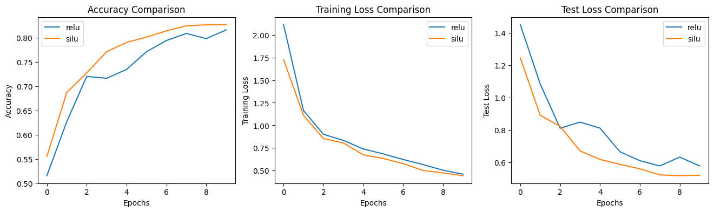
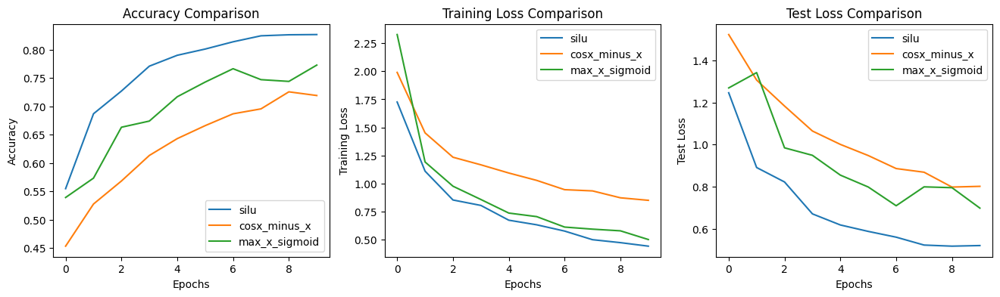
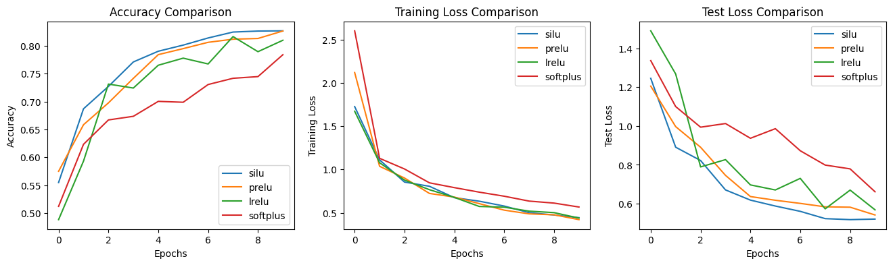
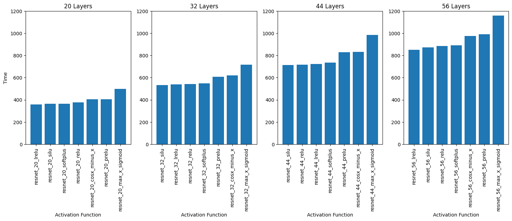
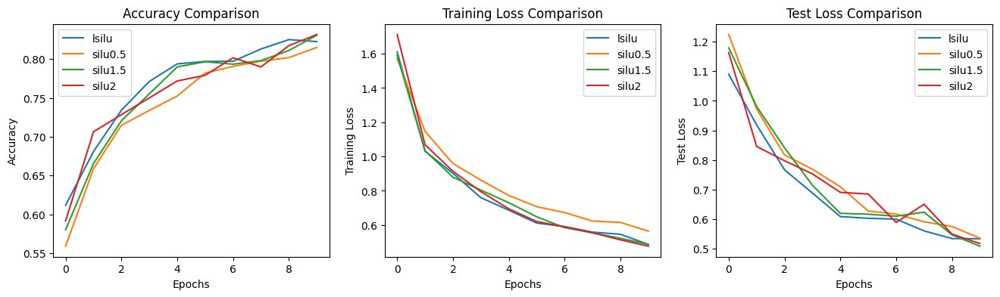

A key component of any neural network is a nonlinear activation function. Due to its simplicity and reliability, the current standard for nonlinear activation functions is the rectified linear unit, or ReLU (Hahnloser et al., 2000; Jarrett et al., 2009; Nair & Hinton, 2010), defined as \(f(x) = \max(x, 0).\) Attempts have been made to construct variations on or alternatives to ReLU, but wide adoption of activation functions other than ReLU remains low.
Recent search algorithm based approaches have shown to produce novel activation functions (Zoph & Le, 2016; Bello et al., 2017; Zoph et al., 2017). A variation on the sigmoid linear unit, or SiLU (Hendrycks & Gimpel, 2016) has been found to consistently outperform ReLU and other popular activation functions in accuracy metrics by up to one percent (Ramachandran et al., 2017) on various learning tasks, such as image classification and machine translation.
In this work we analyze and validate a number of activation functions discovered by search algorithm based approaches. In particular, we take a closer look at the SiLU function, comparing it and other novel activation functions to ReLU, as well as popular activation functions like Leaky ReLU (Maas et al., 2013), Parametric ReLU (He et al., 2015), and Softplus (Nair & Hinton, 2010).
Ramachandran et. al. employ automated search techniques to discover and evaluate activation functions. This is done by designing a search space consisting of different compositions of unary and binary functions, and using an RNN controller to generate sequences of component functions to compose together. The candidate activation function was then used to train and then evaluate the performance of a child neural network on a learning task, in this case image classification on the CIFAR10 (Krizhevsky & Hinton, 2009) dataset using a ResNet-20 (He et al., 2016) model.
Among a wide variety of novel activation functions discovered, the best performing functions:
The strongest performing activation function discovered was a variation on SiLU, defined as \(f(x) = x \sigma(x).\) It is structurally very similar to ReLU, and able to directly replace ReLU without adjustments to the model architecture. Subsequent empirical validation experiments showed that SiLU outperformed a wide variety of both newly discovered activation functions, as well as popular activation functions presented in other papers.
We reproduce selected experiments discussed by Ramachandran et al. to empirically validate the results presented. Several ResNet models were trained on an image classification task using the CIFAR10 dataset, varying the activation function used, as well as the depth of the model. Training loss, test loss, and test accuracy were recorded for each experiment, in addition to total training time. For all experiments we use the model with ReLU as a baseline, the Adam optimizer with PyTorch defaults, and cross entropy as the loss function.
From the novel activation functions discovered by the search algorithm used by Ramachandran et al., we select three to validate. These are SiLU, \(\max(x, \sigma(x)),\) and \(\cos x - x.\)
Additionally, from the other popular activation functions that are also presented, we select three more to validate. These are Leaky ReLU (LReLU), Parametric ReLU (PReLU), and Softplus.
Ramachandran et al. additionally propose a modification to SiLU that includes a tunable or learnable parameter \(\beta\), used to scale the preactivation value, resulting in the function \(f(x)=x \sigma(\beta x).\) We examine \(\beta\) values of 0.5, 1.0 (as regular SiLU), 1.5, and 2.0 using a ResNet-20 model, and additionally allow the network to learn an optimal \(\beta\) value.
We vary the depth of the model to explore how the performance of each activation function scales with the model. Specifically, we train and evaluate each activation function on ResNet models of 20, 32, 44, and 56 layers. Due to limited training resources and time, we were unable to validate on larger models.
All experimental code and analysis is available on GitHub.
The results of our empirical validation broadly support the results presented by Ramachandran et al. In Resnet-20, ResNet-32, and ResNet-44, SiLU achieved the highest test accuracy after 10 epochs, in most cases outperforming the other activation functions. Moreover, we observe lower test loss compared to other activation functions, potentially indicating that SiLU generalizes better.
| Activation Function | Accuracy | Train Loss | Test Loss |
|---|---|---|---|
| ReLU | 0.8047 | 0.505950 | 0.595131 |
| SiLU | 0.8143 | 0.485753 | 0.553022 |
| \(\cos x - x\) | 0.7959 | 0.641438 | 0.587057 |
| \(\max(x, \sigma(x))\) | 0.7955 | 0.581675 | 0.614394 |
| PReLU | 0.8085 | 0.449701 | 0.598796 |
| LReLU | 0.8033 | 0.471236 | 0.604913 |
| Softplus | 0.7758 | 0.683996 | 0.671707 |
We observe that the two activation functions discovered by the search algorithm, \(\cos x - x\) and \(\max(x, \sigma(x)),\) underperformed in all experiments, regardless of model size. These results suggest that these functions make poor choices for activation functions.
Speed of convergence is an important performance metric for any neural network. We visualize test accuracy, training loss, and test loss for each activation function over all training epochs.
  Figure 1: SiLU test accuracy, training loss, and test loss compared to ReLU (above), discovered activation functions (center), and ReLU-like functions (below) over all training epochs, on ResNet-44.
SiLU consistently remains ahead over almost all metrics. In future work, with additional time and resources, it may be fruitful to investigate performance over additional epochs to analyze these trends further.
Total training time is also an important metric to explore. Here we visualize differences in training time between the different activation functions for each ResNet model.
Figure 2: Comparison of total training times for all ResNet models and activation functions. Time is measured in seconds.
Interestingly, SiLU networks were consistently faster to train than their ReLU counterparts. In fact, SiLU consistently placed in the top two fastest activation functions in each experiment. This observation suggests that by replacing ReLU with SiLU in neural networks, higher accuracy can be achieved in less time.
ResNet models using \(\cos x - x\) and \(\max(x, \sigma(x)\) as activation functions consistently took the longest to train. This is likely because of the higher complexity of periodic and exponential functions, which require far more additions and multiplications to compute compared to ReLU and ReLU-like functions.
Our results suggest that varying \(\beta\) as a fixed or learnable parameter does not significantly influence test accuracy. While leaving \(\beta\) as a learnable parameter started with the highest accuracy, SiLU with fixed \(\beta = 2\) achieved the highest final test accuracy.
Figure 3: Test accuracy and loss metrics for different values of \(\beta.\)
| Activation Function | Accuracy | Train Loss | Test Loss |
|---|---|---|---|
| Learnable \(\beta\) (lsilu) | 0.8226 | 0.487016 | 0.533784 |
| \(\beta = 0.5\) (silu0.5) | 0.8151 | 0.564699 | 0.535829 |
| \(\beta = 1.5\) (silu1.5) | 0.8308 | 0.487803 | 0.508667 |
| \(\beta = 2.0\) (silu2.0) | 0.8317 | 0.477034 | 0.517551 |
We conclude that in most cases it suffices to use SiLU with the default value of \(\beta = 1.\)
Our results broadly confirm the conclusions drawn by Ramachandran et al. SiLU consistently outperforms ReLU and other popular activation functions over a variety of contexts and metrics. Most notably, direct replacement of ReLU with SiLU in ResNet models of different sizes resulted in test accuracy improvements of almost two percent. This is significant for what is essentially a one line code change.
Future directions for investigation include extending training to more than 10 epochs, validating a wider variety of novel activation functions discovered by other search based algorithms, and exploring reasons for the decline in SiLU performance as model size increases. Furthermore, in concurrence with Ramachandran et al., we note that further gains are likely to be observed when networks are designed specifically with SiLU in mind.
ResNet Github Implementation Adapted for Model Training. Github Resnet Implementation, 2019
Pytorch Quickstart Tutorial for Model Training. Pytorch Tutorial, 2024
Pytorch FashionMNIST for Model Training. Pytorch MNIST, 2017